Mad Angler
Tutorial
プロジェクトの作成
最初に表示されるのは次のプロジェクト一覧を表示する画面です。ただし、まだプロジェクトを作成していないので、プロジェクトは表示されません。"New Project" をクリックして、プロジェクトを作成します。
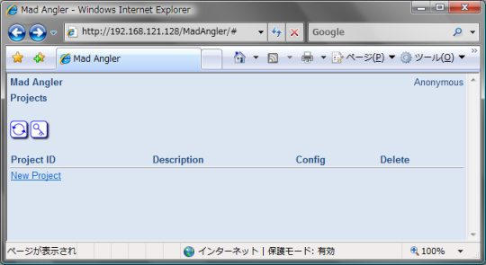
次の画面でプロジェクトを作成します。"Project ID" にプロジェクト名を入力し、Createボタンをクリックします。
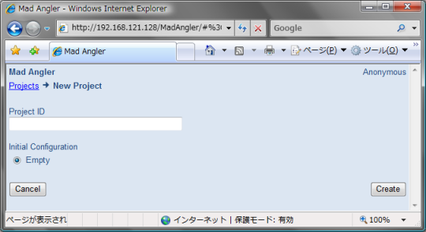
正しくプロジェクトを作成できると、次のようなダイアログが表示されます。OKボタンをクリックすると、プロジェクトの設定に移ります。
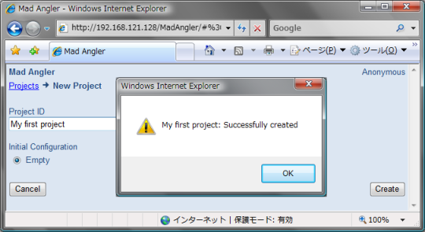
プロジェクトの設定
プロジェクト設定の画面はタブで設定項目が分かれています。次の画面は "Generic" タブを選択したときのものです。ここでは、"Description" にプロジェクトの簡単な説明を入力します。また、詳しくは後述しますが、"Notification URL" にビルドを開始するためのURLが示されています。
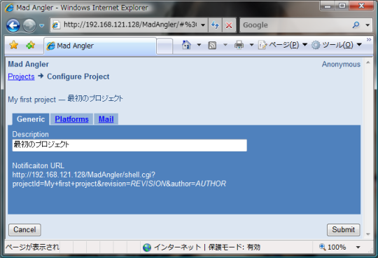
次の画面は "Platform" タブを選択したときのものです。最初はなにもプラットフォームが登録されていません。Addボタンで、プラットフォームを追加します。
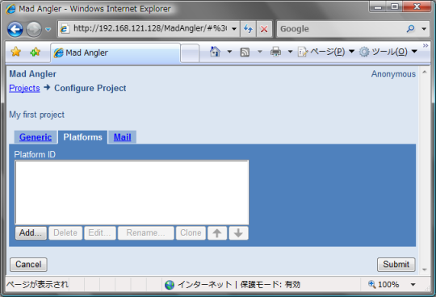
"Platform ID" にはプラットフォームを識別するための名前を入力します。"User@Hostname" にはsshでリモートコマンドを実行するユーザ名とホスト名を@で連結したものを入力します。"Command" にはそのリモートコマンドのパスを入力します（引数は指定できません）。最後の "Charset" ではリモートコマンドの出力するログの文字セットを選択します。リモートコマンドに関する設定内容の意味については、次の節で詳しく説明します。OKボタンをクリックすると、プラットフォームが追加されます。
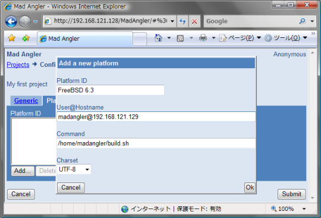
次の画面は "Mail" タブを選択したときのものです。"Enable sending mails" チェックボックスをクリックすると、ビルドが終了したときにメールで通知するようになります。"Sender" には差出人の名前を指定します。"Receipient" にはメール受け取るメールアドレスを指定します。
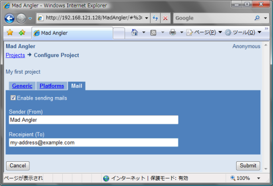
ここまでの設定が終わったら、Submitボタンをクリックして、設定を保存します。設定を保存に成功すると、次のダイアログが表示されます。OKボタンをクリックすると、プロジェクト一覧に戻ります。
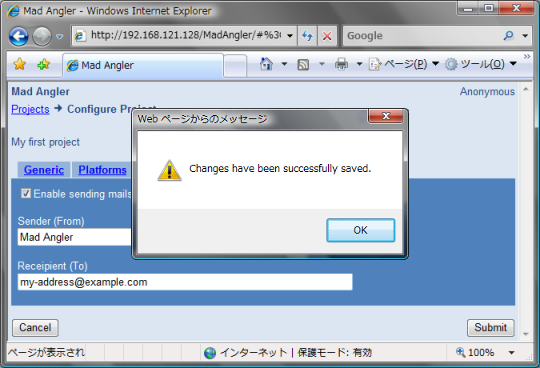
リモートホストとビルドスクリプトの設定
先ほど「プラットフォームの追加」の設定で、"User@Hostname" と "Command" を指定しました。Mad Anglerは "Notification URL" にアクセスされると、各プラットフォーム毎に次のようなコマンドを実行します。
$ ssh User@Hostname Command REVISION
REVISIONは "Notification URL" に含まれるパラメータになります。これをそれぞれのプラットフォームで正しく実行できるようにするためには、プラットフォーム毎に次のような準備をしておく必要があります。
- "User@Hostname" の
~/.ssh/authorized_keysにMad Anglerの公開鍵を追加します。Mad Anglerの公開鍵は、プロジェクト一覧の画面で鍵のアイコンをクリックすると表示されます。 - "User@Hostname" がリポジトリからリビジョンをチェックアウトできるように設定します。この作業はMad Anglerとは直接関係ありませんが、使用するバージョン管理システムにより、アカウントや公開鍵の登録などが必要になるでしょう。
- リモートコマンドである "Command" を用意します。"Command" は第1引数に指定される
REVISIONをリポジトリからチェックアウトして、ビルドします。"Command" はREVISIONを正しくビルドできたときだけ、最終行にOKを表示して終了するコマンドでなければなりません（ビルドに失敗したときは最終行にOK以外を表示する必要があります）。
リモートコマンドの具体例は次のようになります。前半ではプラットフォームの情報を表示し、さらにリモートコマンドそれ自体を表示します。後半では、REVISIONをチェックアウトしてmakeしています。
#!/bin/sh
echo "User:" `whoami`
echo "Host:" `hostname`
echo "Directory:" `pwd`
echo "Platform:" `uname -a`
echo "Command:" $0 "$*"
echo "--- $0"
cat $0
echo "--- Log"
revision=$1
workdir=$$
{ mkdir $workdir \
&& cd $workdir \
&& $revisionをチェックアウト \
&& cd チェックアウトしたディレクトリ \
&& ./configure \
&& make; } \
|| { rm -rf $workdir; echo NG; exit; }
rm -rf $workdir
echo OK
準備ができたら、Mad Anglerから実行する前に、設定が正しいかどうか確認しておきます。"User@Hostaname" にログインした後、次のようにコマンドを実行して、既知のビルド可能なREVISIONをビルドできることを確認します。
$ ssh User@Hostname Password: ... $ Command REVISION ... OK $
ビルドの実行
設定が正しいことが確認できたら、次のように "Notification URL" にアクセスしてみてください。
$ fetch -o - URL
あるいは
$ wget -O - URL
ビルドが走れば成功です。バージョン管理システムによりますが、コミットのフックスクリプトに "Notification URL" へアクセスするコマンドを追加すれば、コミットする度にMad Anglerがビルドを確認するようになります。
ビルド結果の通知
ビルドが終了すると、Mad Anglerは次のようなメールでビルド結果を通知します（メールの設定で、通知を有効にした場合）。
From: Mad Angler <www@localhost.localdomain> To: my-address@example.com Subject: [My first project] BUILD SUCCEEDED: Rev. REVISION
Project: My first project Revision: REVISION Result: OK Log: http://192.168.121.128/MadAngler.html#%3Clink%20type%3D%22buildLog... Mad Angler: http://192.168.121.128/index.html
"Log" に記載されているURLをウェブブラウザで開くと、次のような画面が表示され、ログの詳細を確認することができます。
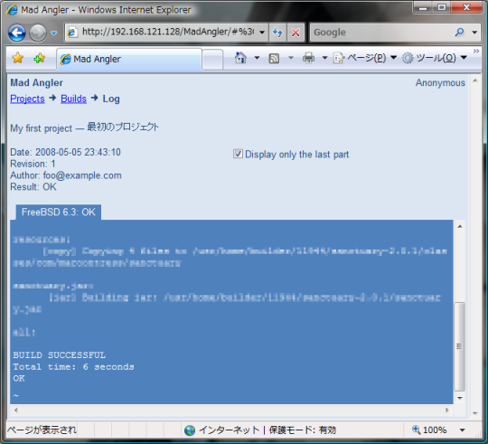
ログは最後の20行だけが表示されているので、ログ全体を確認したい場合は "Display only the last part" チェックボックスのチェックを外してください。
ビルド結果の確認
メールによる通知だけではなく、プロジェクト一覧の画面からもプロジェクトのビルド状況を確認することができます。
次のプロジェクト一覧の画面からプロジェクトIDをクリックします。
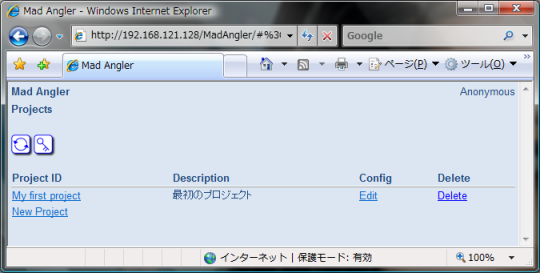
次のようなビルド一覧の画面が表示されるので、確認したいビルドをクリックします。
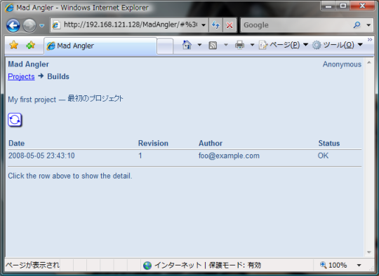
クリックしたビルドのログが画面の下部に表示されます（ログの右上にあるアイコンをクリックすると、ログだけを表示します）。
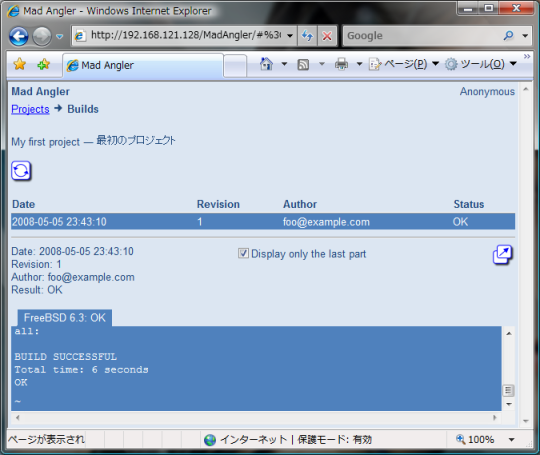